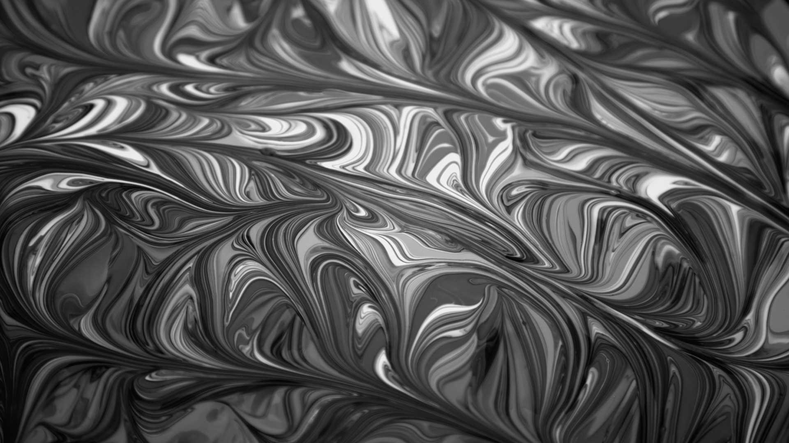

Przetwarzanie obrazów
Algorytm konwersji do odcieni szarości
Algorytm konwersji obrazu kolorowego do odcieni szarości (ang. grayscale conversion) polega na przekształceniu każdego piksela obrazu tak, aby jego trzy składowe kolorów (czerwony - R, zielony - G, niebieski - B) miały tę samą wartość, co skutkuje obrazem pozbawionym barw, ale zachowującym informacje o jasności.
Algorytm z wagami: r = g = b = (r*0.3 + g*0.6 + b*0.1)
W tym algorytmie każda wartość kanału RGB zostaje zastąpiona przez ważoną średnią oryginalnych składowych Ten algorytm został użyty w media-converter ze względu na wzięcie pod uwagę wpływ ludzkiego postrzegania kolorów na jasność.
Przed:

Po:
Algorytm rozmycia
Rozmycie (ang. blurring) to technika przetwarzania obrazu polegająca na wygładzaniu pikseli. Głównym celem rozmycia jest zredukowanie szczegółów lub szumu poprzez uśrednianie wartości sąsiednich pikseli. Efektem działania algorytmu rozmycia jest „miękki” obraz, na którym ostre przejścia kolorów i krawędzie zostają złagodzone.
Rozmycie liniowe
Algorytm rozmycia liniowego to jedna z najprostszych metod rozmywania obrazu. Polega na zastąpieniu wartości każdego piksela średnią z jego najbliższych sąsiadów. Implementacja algorytmów używa w tym celu kwadratu o zadanej wielkości, którego środkiem jest zmieniany pixel. Na rogach kwadrat wychodzi poza granice obrazu. Algorytm może:
- Wypełnić czernią
- Wypełnić bielą
- Pominąć krawędzie